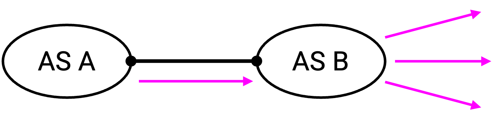
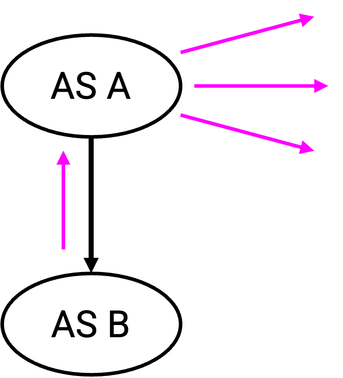
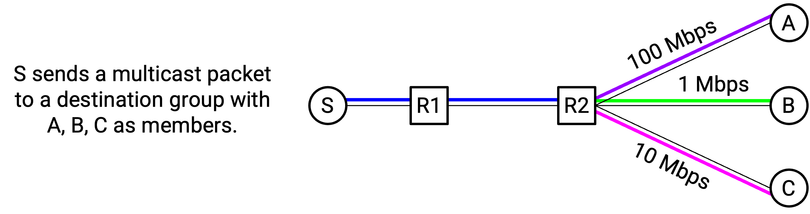

IP Multicast Challenges
Inter-Domain Routing
The protocols we’ve described so far (IGMP, DVMRP, CBT) can be used for intra-domain multicast routing. However, they cannot easily be extended to inter-domain multicast routing.
One major problem here is scalability. For example, if we used DVMRP at a global scale, then periodically, when the pruning state is deleted, packets will get flooded to the entire Internet, which isn’t practical.
Also, recall that inter-domain routing introduces the additional challenge of AS autonomy and privacy. For example, if we used CBT at a global scale, then the core router might be in a different network, and this requires you to trust somebody else to control the core router.
Inter-domain multicast routing is a hard problem, and much work has been done to develop solutions. For example, the CBT core selection problem could be solved by having multiple cores (one per network) that communicate. However, in practice, there has been very little adoption of inter-domain multicast routing.
Charging
The IP multicast service model is fundamentally at odds with the business model that modern ISPs use. For example, consider this AS graph, where AS A and AS B are peers:

As peers, AS A and AS B should be able to exchange equivalent amounts of traffic, but multicast makes it difficult to define what counts as equivalent traffic. As an example, suppose AS A sends a multicast packet to AS B. It’s possible that AS B has many children who are part of the group. This means that AS B received one packet, but had to send out many packets. AS B used much more bandwidth here than AS A did. Does AS A need to pay some extra to AS B because of this? (It’s an open question, with no clear answer.)
As another example, consider this AS graph, where AS A is the provider and AS B is the customer:

AS B is paying AS A for service. What if AS B sends a multicast packet, and AS A has to forward copies of that packet to many other destinations? Should AS A charge more for this packet compared to a unicast packet, and if so, how much more should AS A charge? (It’s an open question, with no clear answer.)
Designing a business model is made more difficult by the fact that the IP multicast model does not explicitly keep track of group size. If you wanted to charge users based on the size of the destination group, there’s no clear way to determine the size of any given destination group. Your forwarding tables tell you about your parent and your children on different delivery trees, but the tables do not tell you how many end hosts will be receiving this packet in total.
Congestion Control
Consider a source sending a multicast packet down the delivery tree, to many recipients. The source needs to pick a good sending rate to avoid overloading the network. What rate should the source pick?

The traffic will travel along many different paths, and each path could have a different capacity. The source could send at 1 Mbps to avoid overloading any of the links, but this leave unused capacity along the other paths. On the other hand, the source could send at 100 Mbps to maximize performance, but this causes some links to be overloaded. There’s no clear answer for what rate the source should pick.
In practice, one possible solution is to define different groups depending on performance. For example, we could define four different multicast groups, where each group receives the same video feed, but with different video qualities. Then, any interested recipients can try joining different groups to see which one gives them the best performance.
Reliability
Just like IP unicast, IP multicast is best-effort, which introduces some additional complexity. For example, you might send a packet, and it might reach some, but not all, group members.
We could try to add acks to solve this, but this is also potentially problematic. If the group has millions of members, a single sender won’t be able to process millions of acks for every packet.
Another possible approach is to use negative acknowledgements (nacks), where a group member sends nothing if they receive a packet, and sends a nack if they don’t receive a packet (e.g. their timer expires). Again, if the group has millions of members, a single sender could get overwhelmed.
In the nack approach, it’s also not clear how to recover from failure. If someone didn’t receive the packet, do we multicast the packet to the entire group again? This wastes bandwidth because some group members already received the packet and will be receiving a duplicate copy.
Another approach is to unicast the packet to just the group members who sent nacks. If many group members didn’t receive the packet, this could be wasteful because we have to unicast many copies of the same packet. For example, consider the case where the very first link drops the packet, which means that none of the group members received the packet.
Which retransmission approach is better? It’s not immediately clear, and it can depend on how many group members received the packet.
In practice, some modern IP multicast applications don’t implement reliability at all. Or, they implement reliability by encoding some redundancy into the data stream (think: error-correcting codes) so that losses and corruptions can be corrected from the data itself, without the network’s help.
Encoding redundancy does mean you need more bits to encode the same data. For example, if you want to send 5 packets’ worth of data, you might send 10 packets, and encode the bits in such a way that any 5 of the packets can be used to reconstruct the original data.
Security
Another limitation of IP multicast is the lack of access control. Anybody can join a group, and anybody can send messages to any group. If you want to enforce access control (e.g. only paid users can watch the sports game), you have to build that functionality separately.
The lack of access control leads to security vulnerabilities. A malicious sender could flood packets to a specific multicast group, causing all members of that group to be overwhelmed. Note that this is more effective than the unicast alternative, where the malicious sender would have to flood packets to every member separately.
Additional security measures like encryption are also difficult to implement. Suppose you encrypt multicast messages by giving every group member a shared secret key. What if someone leaves the group? If you keep using the same key, that user still knows the secret key and can read your messages. One approach is to switch to using a new key, but now you need a way to securely distribute this new key to the remaining group members.
IP Multicast in Practice
Because of all these challenges, IP multicast is mostly used today within a single domain, and not across different domains.
Some applications might still want group communication across multiple networks (e.g. multi-player gaming, video-conferencing). Instead of relying on IP multicasting, which doesn’t support inter-network communication, many applications have implemented their own custom solutions for group communication.
For example, if the group is small enough, the application could implement a central relay server. Group communications are unicast to the central relay server, which then unicasts the message to the other group members.
Or, if the group is small enough, the naive unicast-based solution (send separate unicast packets to each group member) might work just fine.
If IP multicasting doesn’t work across domains, and custom solutions require extra work to implement and scale up, how do modern applications handle group communications? One solution is to use overlay multicast, which is an alternative to IP multicast that implements network functionality at Layer 7 instead of Layer 3. We’ll look at overlay multicasts next.